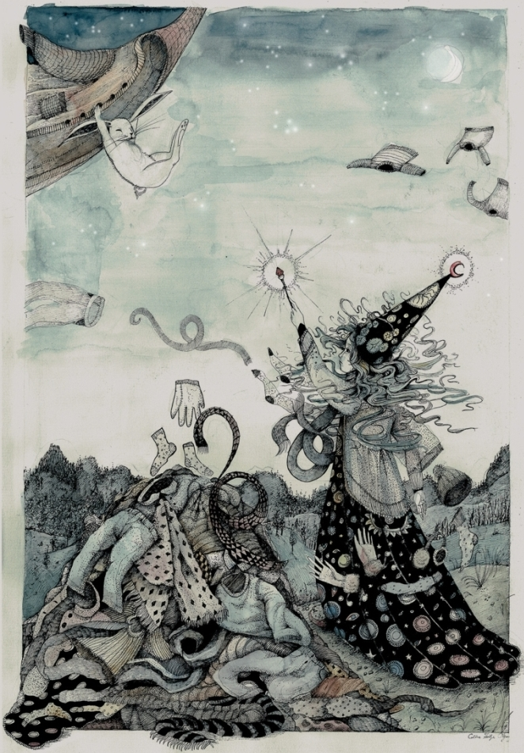

Tapferhase und der fliegende Anorak
-"Papa, erzählst du mir von einem fliegenden Anorak?"
-"Vom Tapferhasen und einem fliegenden Anorak"
-"Von einem fliegenden Anorak? Das ist aber gar nicht einfach…hm.........na gut, pass auf."
Es gab einmal eine wunderschöne, runde Wiese, und drum herum einen tiefen, dichten Wald.
Und auf dieser Wiese und in diesem Wald lebte eine Gruppe von Hasen.
Genau hundert waren sie.
Von den hundert waren neunundneunzig übliche, gewöhnliche, durchschnittliche Hasen.
Doch der hundertste, der war besonders.
Denn es war tapfer.
So nannte man ihn auch Tapferhase.
Es war an einem warmen Sommerabend, da saßen die Hasen auf ihrer Wiese und aßen gerade ihre Abendmöhre, als sie etwas ganz und gar Ungewöhnliches erblickten: über ihnen schwebte hoch in der Luft ein Anorak daher. Er wedelte mit seinen Armen als wären es Flügel, und flog über die Wiese der Hasen hinweg.
-„Lasst ihn uns fangen!“ schrien einige auf, und liefen dem fliegenden Anorak hinterher. Sie hüpften hoch in die Luft, doch der Anorak war zu weit oben.
Er flog weiter und war bald schon über dem Wald. Die Hasen rannten hinterher so schnell sie nur konnten.
Da hatte Tapferhase eine Idee: „ich hole ein Seil, daraus machen wir ein Lasso, und holen es damit runter!“. Kurz darauf standen die fünf oder sechs Hasen auf einem großen Stein im Wald; Tapferhase warf den Lasso in die Luft, und es wickelte sich um den Anorak.
Doch der Anorak war stark und hob Tapferhasen, der sich am Seil festhielt, in die Luft hoch. „Haltet mich fest“ schrie Tapferhase. Ein Hase klammerte sich an die Füße von Tapferhase, doch auch dieser wurde hochgehoben. Als sich alle Hasen schließlich in einer Kette aneinander klammerten, konnten sie schließlich den Anorak runterziehen.
-„Ja, was machen wir denn jetzt damit?“ fragten sie sich, und beschlossen, dass man ihn gut als Nachtdecke verwenden könne. Und sie einigten sich, dass der Anorak die erste Nacht Tapferhasen zustehe.
Tapferhase hatte einen guten Schlaf, denn der Anorak war schön warm. Doch mitten in der Nacht wachte Tapferhase davon auf, dass der Anorak wieder mit den Armen zu wedeln anfingt. Tapferhase versuchte ihn zu bändigen, doch der Anorak kämpfte stark dagegen an.
Schließlich beschloss Tapferhase: „nun gut, wenn du fliegen willst, dann flieg; wollen wir doch sehen, wo du so sehr hinwillst“ – und er krallte sich fest an den Anorak und ließ sich hochheben, hoch in die Luft, höher als die höchsten Bäume.
Diese Nacht sahen jene Tiere des Waldes, die zu so später Zeit noch wach sind, etwas sehr, sehr seltsames: über die Bäume des Waldes flog ein Anorak, der mit seinen Armen wedelte als wären es Flügel; und an ihm hing ein Hase, der sich sichtlich bemühte, nicht herunterzufallen. Die Eule, der Waschbär, der Fuchs, und all die anderen schauten gebannt Richtung Himmel und schüttelten ungläubig ihren Kopf.
Der Anorak und Tapferhase flogen lange Zeit; sie flogen über Wälder, Flüsse, Berge und Täler.
Schließlich näherten sie sich einem Hügel, und Tapferhase erblickte auf dem Gipfel des Hügels eine Gestalt, die sich merkwürdig bewegte, und daneben einen Haufen Sachen. Der Anorak flog über den Haufen, ließ sich darauf fallen und hielt still. Tapferhase sah, dass der riesige Haufen, auf dessen Gipfel er sich nun befand, aus lauter Kleidungsstücken bestand, kletterte runter und schaute zur sich bewegenden Gestalt, die in der tiefen Nacht nur vom Licht des Mondes beleuchtet wurde.
Es war ein Mädchen. Das Mädchen trug ein Zaubererkleid, hatte einen Zauberstab in der Hand und zauberte ununterbrochen. Und Tapferhase sah, dass aus allen Richtungen unzählige Kleidungsstücke herbeiflogen, alle hin zum Kleiderhaufen, und als sie über dem Haufen waren, sich genauso fallen ließen, wie es der Anorak tat.

-„Ich bin Tapferhase“ trat Tapferhase an das Mädchen heran „wer bist Du denn?“
-„Ich bin Natalie“
-„und was machst Du denn hier so spät in der Nacht?“
-„Ich zaubere mir warme Kleidungsstücke herbei“
-„Warum denn? Es ist doch so warm!“
-„Weil ich friere... denn ich bin verflucht.“
...und das Zauberermädchen begann zu erzählen. Natalie erzählte, dass sie aus einer Zaubererfamilie stamme, aus dem Dorf der Zauberer, wo sie mit ihren Eltern lebte. „Dort können alle zaubern“ – sagte sie.
Der Nachbar im Dorf sei ein alter, mächtiger und jähzorniger Zauberer gewesen. Eines Tages, vor vielen Jahren, als Natalie noch ein kleines Kind gewesen sei, da wollte sie unbedingt mit dem alten, mächtigen und jähzornigen Zauberer spielen, doch dieser hatte leider keine Lust.
Natalie hatte gefleht, geweint, gedroht, doch nichts half – schließlich war Natalie so sauer, dass sie die geliebten Rosen im Garten des alten, mächtigen und jähzornigen Zauberers zertrat, eine nach der anderen.
Als der alte, mächtige und jähzornige Zauberer dies sah, da erboste er schrecklich, nahm seinen Zauberstab und sprach einen ungeheuren Fluch aus: er verdammte Natalie auf diesen Hügel und sie sollte ewig frieren, ob das Wetter warm oder kalt sei.
-„Und du kannst den Hügel nicht verlassen?“ – fragte Tapferhase
-„Nein“ erwiderte Natalie. „Es gibt eine unsichtbare Wand um den Hügel herum. Diese lässt alle durch, nur mich nicht.“
Tapferhase beschloss, dass er dem Zauberermädchen helfen müsse. Es verabschiedete sich von Natalie und machte sich auf den Weg zum Dorf der Zauberer.
Tapferhase fand das Dorf der Zauberer, und dort das Haus des alten, mächtigen und jähzornigen Zauberers. Er klopfte an der Tür und sah den alten Zauberer mit strengem Blick vor sich.
-„Zauberer“ sagte Tapferhase „ich komme vom Hügel des verfluchten Zauberermädchens, und bitte dich, den Fluch wieder aufzuheben.“
-„Das kommt nicht in Frage“ sagte der Zauberer wütend. „Sie hat meine wunderbaren, einzigartigen Rosen zertrampelt! Sie werden nie wieder blühen können!“
-„Aber Zauberer... Natalie hat schon genug gelitten. Es muss ein Ende haben“
-„Nein, nein und nochmals nein!“
Tapferhase schaute zu den zertrampelten Rosen im Garten. Sie lagen zerbrochen am Boden, ohne Blüten oder Blätter. Da hatte Tapferhase eine Idee:
-„Sag mal Zauberer... sollten die Rosen wieder blühen können, würdest du dann Natalie vom Fluch erlösen?
-„Das ist zwar unmöglich, aber sollte es dennoch gelingen, dann, gut, von mir aus, dann nehme ich den Fluch zurück.“
So eilte Tapferhase zurück in seinen Wald, und rannte und rannte tagelang. Einmal angekommen, bat er die anderen Tiere um Hilfe.
Schließlich kehrten zusammen mit Tapferhasen fünf Hasen, zehn Maulwürfe, hundert Regenwürmer, und ein Wildschwein ins Dorf der Zauberer zurück. Im Garten des alten Zauberers machten sie sich dann an die Arbeit: die Hasen richteten die Rosen wieder auf; die Maulwürfe gruben bis zu den Wurzeln und reinigten diese gründlich; die Regenwürmer pflügten die Erde um, und das Wildschwein, na ja, das machte einmal auf die Erde , um sie zu düngen.
Dann sagte Tapferhase dem alten Zauberer, er solle auf den nächsten großen Regen warten, und dann drei Tage zählen. Wenn die drei Tage verstrichen seien, würde er zurückkehren.
Und so kam es. Am dritten Tag nach dem nächsten großen Regen kehrte Tapferhase zurück, und siehe da: die Rosen standen in voller Blüte, schöner und prächtiger denn je.
Der alte, mächtige und jähzornige Zauberer konnte es gar nicht fassen: „meine wunderbaren, geliebten, tollen Rosen – ihr blüht wieder!“.
„Zauberer, stehe zu Deinem Wort“ sagte Tapferhase „beende den Fluch“.
Am nächsten Tag stand Tapferhase wieder auf dem Hügel und sagte zu Natalie: „der Fluch ist vorbei. Du kannst heimkehren“.
Und Natalie und Tapferhase kehrten zusammen ins Dorf der Zauberer zurück. Natalie und ihre Eltern waren an diesem Abend die glücklichsten Menschen auf der ganzen Welt. Sie tanzten, feierten und sangen gemeinsam sieben Tage und sieben Nächte.
Und da die Eltern von Natalie ja auch Zauberer waren, beschlossen sie, Tapferhase und die Tiere, die geholfen hatten, zu belohnen, und sie begannen zu zaubern.
So wurden Tapferhase und die fünf Hasen, die die Rosen aufgerichtet hatten fortan jedes Mal, wo sich ihnen ein Wolf näherte, unsichtbar, und brauchten sich so nie wieder vor Wölfen zu fürchten. Die Maulwürfe erhielten durch Magie wahre Adleraugen und konnten damit auch über der Erdoberfläche leben. Die hundert Regenwürmer wurden zu den schnellsten Regenwürmern der Welt gezaubert, so dass sie sich vor jeder Gefahr blitzschnell eingraben konnten.
Und das Wildschwein? Das bekam eine wunderbare, magische Pfütze inmitten seines Waldes, die nie austrocknete und zu jeder Jahreszeit angenehm lauwarm war. Danach badete das Wildschwein immer in seiner Pfütze, im Sommer um sich abzukühlen, und im Winter sich schön aufzuwärmen.
Tapferhase besuchte Natalie und ihre Eltern auch später mindestens einmal im Jahr, und sie erzählten sich die Geschichte immer wieder aufs Neue und tranken dazu Natalies selbstgemachten Holunderblütensaft.